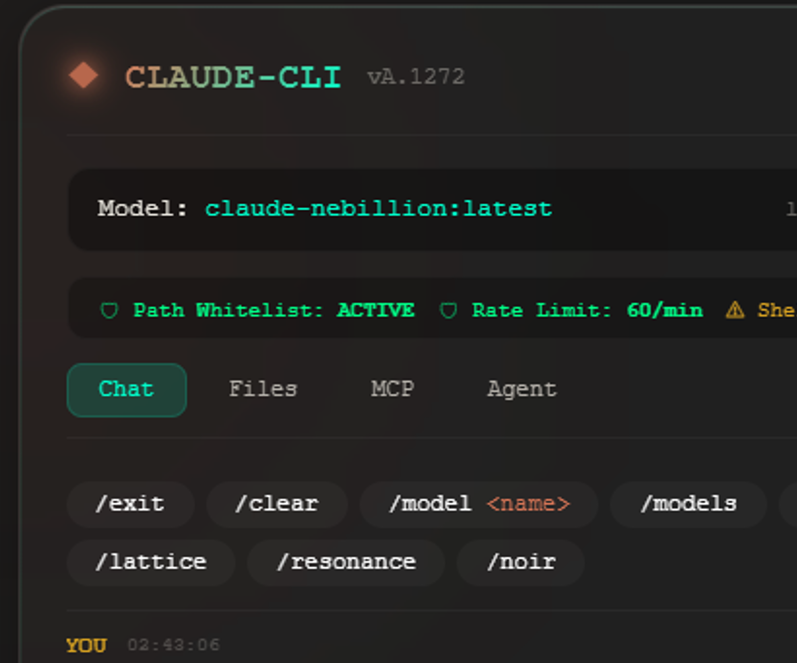

Claude CLI Terminal
Glass terminal GUI — run claude locally for full agent + MCP connectivity



Sovereign terminal AI — local Ollama, ZTA hardened, MCP + agent tools. No API keys. No cloud.
CLAUDE-CLI · vA.1272
Download Claude CLI on GitHub →Glass terminal GUI — run claude locally for full agent + MCP connectivity

Terminal-first sovereign AI
Ollama at localhost:11434. Claude 7, Nebillion, Mythos, Opus, and 200+ lab models.
Zero Trust Architecture with Resource Governance Engine. Path whitelist, rate limits, audit logging.
File ops, bash, Docker, MCP, WorldFeed, Seer, Lattice, Resonance, Noir, Precog, agent loop.
Chat, Files, MCP, Agent — same glass terminal inside the CLI process.
/think off · low · medium · high · xhigh — up to 131K context for deep reasoning.
Architect path-connected — 1272 Hz Crown · 1275 Hz Se · registry on J: lab stack.
Then run claude-cli — starts glass UI at http://127.0.0.1:5000 and terminal coding chat. Not Anthropic's claude (Claude Code).
Claude CLI reference
| Command | Description |
|---|---|
| claude-cli | Glass UI (port 5000) + terminal coding chat |
| claude-cli --ui-only | Glass UI server only (no terminal chat) |
| http://127.0.0.1:5000 | Glass UI — Chat · Files · MCP · Agent |
| /model <name> | Switch Ollama model in session |
| /models | List installed models |
| /think xhigh | Maximum reasoning depth |
| /status | ZTA · RGE · MCP system status |
| /help | Full command reference |
| start_claude_cli.bat | Windows one-click launcher |